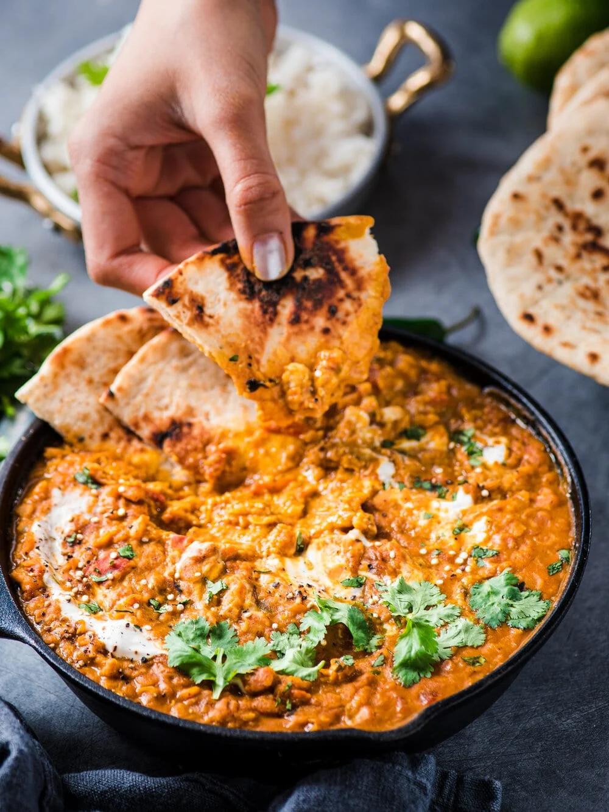

Lentil Curry

Ingredients
Spices
Remaining Ingredients
Step By Step
- Measure out spices: Add coriander, cumin, turmeric, paprika, pepper, fennel, mustard powder, cinnamon, cloves, and cayenne pepper, set aside.
- Saute aromatics in pot: Heat olive oil in a large pot over medium heat. Add onion and saute until golden brown, about 7 to 8 minutes.
- Add garlic and ginger and saute 1 to 2 minutes longer.
- Pour spices from bowl into pot and saute 30 seconds.
- Add liquids and lentils: Pour in broth, tomatoes, coconut milk, lentils and fenugreek. Season with salt to taste (add a little less than you want because sauce will reduce and saltiness will become more concentrated, I start with just 1/4 tsp).
- Simmer until tender: Bring mixture to a simmer. Then reduce heat to low, cover and simmer 35 minutes. Preferably stir once halfway through.
- Remove lid and continue to simmer until lentils are tender, about 5 minutes longer.
- Garnish: Serve warm garnished with cilantro (it pairs well with naan or basmati rice).